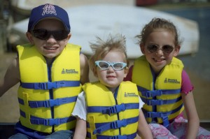

KIDS DON'T FLOAT
With summertime approaching, parents must take caution while engaging in aquatic activities with young children. Whether it be at the beach, lake, or pool, it is imperative to keep your kids safe from drowning. Too many unnecessary deaths and injuries occur due to drownings and other water related incidents, losses that are completely preventable with the right measures taken. Days that are meant for fun in the sun can end in irreversible tragedy if parents are not careful enough to protect their children. Use this website for helpful tips on keeping your kids' heads above the water this season!

Georgia Drowning Statistics
Statistics from the Center for Disease Control and Prevention show that from 2005-2014, the average annual unintentional drowning rate across the United States was 3,636 deaths per year. This number means about 10 deaths per day across the nation. Although the age range is not limited to children, 20% that number were aged 14 or younger. This does not include the amount of children that, although did not die, received medical attention for near-drowning experiences. For every 1 incident that was fatal, 5 more incidents occurred that resulted in emergency medical care. The effects of drowning besides death can include severe brain damage that might include long term disabilities such as memory loss, loss of basic function, and long term learning disabilities. Click the following link to view further information and previous drowning statistics for the state of Georgia.
Georgia Department of Public Health